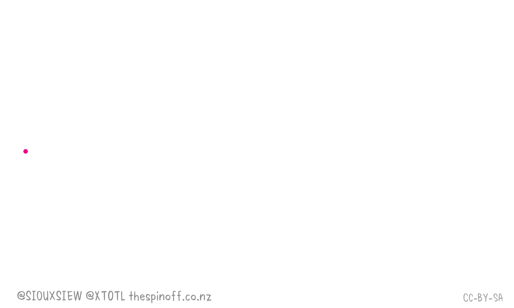

Krishack
Hackathon med fokus på Corona-krisen.
Pågår nu och fortsätter tills krisen är över.
Kom igång
Läs igenom förslag på hur du kan agera solidariskt med din omgivning i praktiken.
Hackathon med fokus på Corona-krisen.
Pågår nu och fortsätter tills krisen är över.
Läs igenom förslag på hur du kan agera solidariskt med din omgivning i praktiken.
Värna vården: Hjälp vården mer, snabbare. Inspiration: Facebookgruppen "Sjukvårdshjälpen". Mer utrustning till vården behövs omgående. Vad det innebär i praktiken.. hur kan en hjälpa till med detta?
Information & kommunikation: krisinformation.se är den självklara källan för oss alla att gå till, men om du inte kan svenska, vad gör du då? Kan vi skapa visualiseringar som hjälper fler förstå hur illa det kan bli om vi inte alla gör en insats?
Lösningar för bättre kommunikation. Hur kan befintliga samordningsinsatser nå ut till de som har tid och möjlighet att hjäla till?
Du kan ansluta till befintliga initiativ som organiserar volontärer och andra insatser. Ex. Sjukvårdshjälpen som organiserar sig på fb och wefightcovid.org och lokala grupper där du kan hjälpa äldre grannar med inköp.
Inspiration:

Riskgrupper: Hur kan vi bättre hjälpa de personer som ingår i riskgrupper, som kan dö om de blir smittade?
Jobben: Många mister sina jobb nu. Hur kan vi hjälpa dessa personer hitta andra jobb/utbildningar/möjligheter till försörjning?
Småföretagare: Småföretagare Hur kan vi koppla samman småföretagare och konsumenter så att de som är friska och har sina jobb kan upptäcka och stödja lokala verksamheter?
Samlar in material till sjukvården. Om du t.ex. har något att donera, vänd dig till sjukvårdshjälpen på facebook. Där finns individer som arbetar inom vården och har kontakt med de som är ansvariga för att ta emot material på sjukhusen och hos andra vårdinstanser.
wefightcovid.org har flera initiativ.
Hör av dig till Niina om du vill engagera dig i hacket.
Webbutvecklare? Den här hemsidan finns uppe på github, du kan hjälpa till och göra den här hemsidan bättre.
Vilka viktiga behov har vården, myndigheter, individer och småföretagare just nu som vi skulle kunna göra något åt?
Du kan också engagera dig i att plocka fram detta! Kom med i slacken och synka med andra som redan kommit igång med att höra av sig till myndigheter bl.a.
Anmälan VAB till Försäkringskassan och jobbet på en och samma gång med ett mail, ett sms, ett telefonsamtal eller ett meddelande till en slackbot.
#project-vabomaten på slack.
#general på slack.
Glesys sponsrar med gratis videochatt. Läs mer på glesys.se/meet
Glesys sponsrar med VPS till krishack-projekt. Hör av dig till Niina (niina@46elks.com) för att få tillgång till VPS till ert projekt.
46elks sponsrar krishack-deltagare med SMS, telefonnummer och telefonsamtal.
Mail in a box - en komplett mailserver, som du enkelt kan ladda ner och installera på valfri VPS.